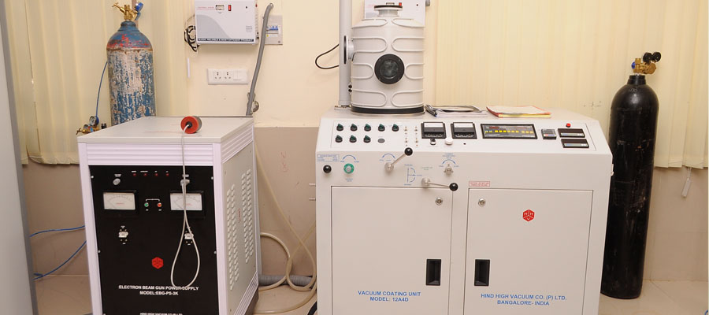
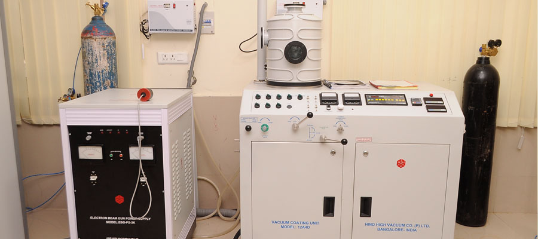
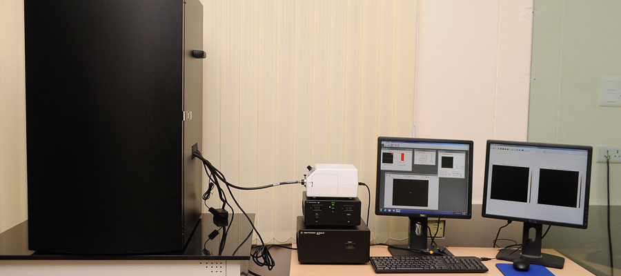
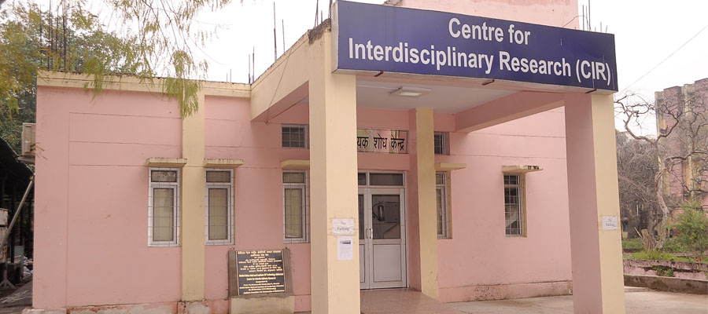
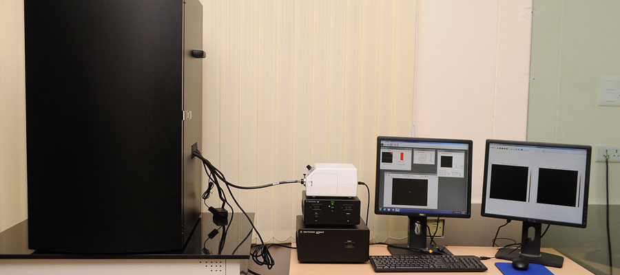
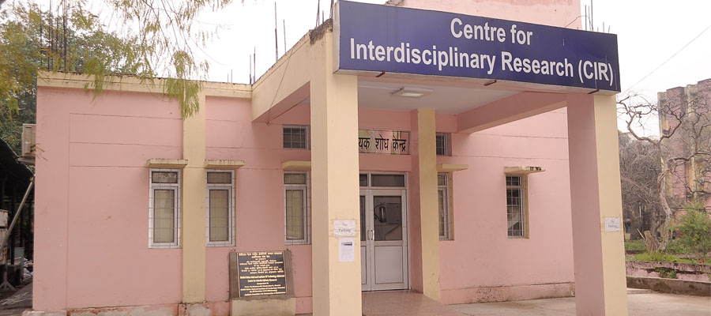

 



The Centre for Interdisciplinary Research (CIR) was established in 2012 by Prof. P. Chakrabarti, Director of MNNIT Allahabad. With his vision for rapid developments in Science and Technology research, CIR was founded to strive and keep pace with cutting-edge research.
The primary objective of the CIR is to provide top research and analytical facilities for undergraduate, postgraduate students, research scholars, and faculty. CIR is successfully operating under the coordination of a core and technical committee appointed by the Director.
Email: contact@cir-mnnit.ac.in
Phone: +91-532-2545404